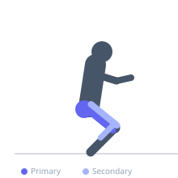
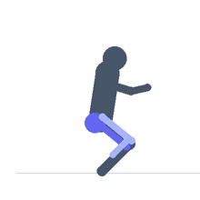

Exercise guide / Cossack Squat Mobility Flow
Cossack Squat Mobility Flow
A dynamic hip and ankle mobility flow based on the Cossack squat pattern. The exerciser moves continuously from side to side in deep lateral squats, spending time at the bottom of each position to load the hip into adduction and the ankle into dorsiflexion. This flowing version covers more ground than a static stretch and trains hip mobility through its full adduction and external rotation range simultaneously, making it valuable for dancers, martial artists, and anyone addressing hip mobility deficits.
Primary muscles
adductor magnus
gluteus maximus
Secondary muscles
vastus lateralis
soleus
Stabilizers
erector spinae
Equipment
No Equipment (Bodyweight)


Starting position
- Stand with feet approximately 2-2.5 times shoulder-width apart and toes pointed slightly outward.
Setup
- Wear flat-soled shoes or perform barefoot. Have a wall or pole available for balance assistance during learning.
Steps
- Step 1: Shift your weight to the right side and bend the right knee deeply, lowering your hips toward the floor on the right side.
- Step 2: At the bottom of the right Cossack squat, the left leg is fully extended with the left foot flat or heel up.
- Step 3: Hold the right bottom position for 3-5 seconds.
- Step 4: Transition through the center by rising slightly, then shift weight to the left and descend into the left Cossack squat. Hold 3-5 seconds. Continue flowing side to side.
Coaching cues
- Keep the squatting heel down — this is the primary mobility goal
- Let the hip open at the bottom — feel the deep groin stretch
- Transition slowly — the value is at the bottom, not in the movement
Breathing
- Exhale as you descend into each side. Breathe deeply at the bottom position. Inhale as you transition through center.
Range of motion
- Descend as deep as the hip and ankle allow while maintaining the heel on the floor.
Tempo
- 3-5s hold at each bottom position. Slow controlled transitions through center.
Common mistakes
- Lifting the heel of the squatting side — work on ankle dorsiflexion if this occurs
- Leaning excessively forward with the torso
- Rushing through the transition without pausing at the bottom of each side
Safety
- Avoid if you have acute hip labral tears or medial knee pain with deep adductor loading
- Begin with a reduced depth and wider foot position if hip or ankle mobility is limited
Training
- mobility: 5–10 reps
- mobility: 2–3 sets
- Rest: {'mobility': 60}